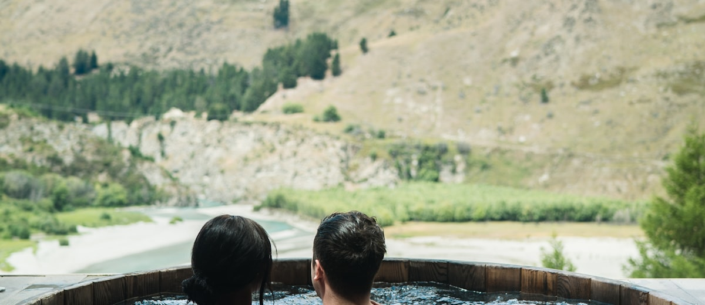

No hay un mejor destino: hay un mejor destino para cada cosa. Y cuando el objetivo es descansar y recuperarse, el bienestar bien entendido también es salud.
Turquía, España, Hungría, Colombia, México y Tailandia comparados.
Leer guía →
Termalismo, descanso y cuándo tiene sentido combinarlo con un tratamiento.
Leer guía →Elegido el país, la clínica hace el trabajo. Cómo acertar con ella.
Leer guía →